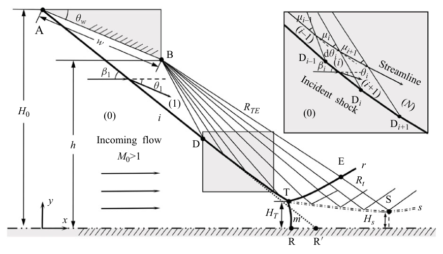
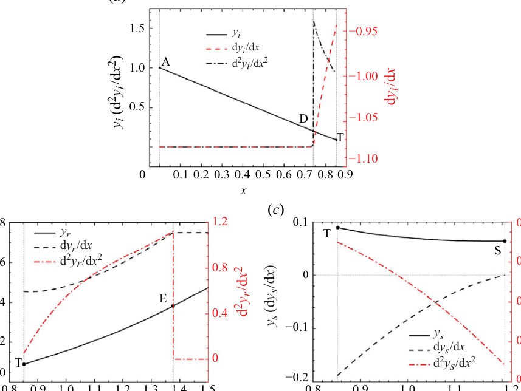
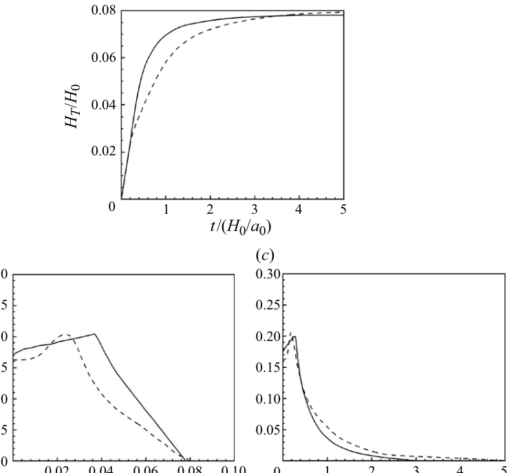
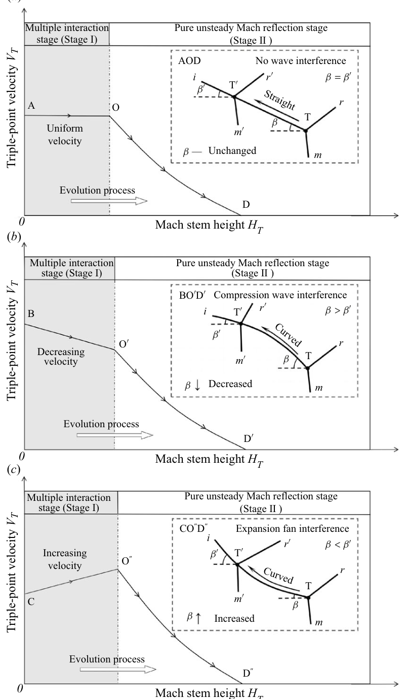

01中文摘要
研究二维无粘流中下游膨胀扇干扰下的激波反射，包括定常马赫反射和规则反射向马赫反射（RR→MR）的非定常转捩，并提出无量纲楔长阈值。基于经典激波与膨胀波关系建立定常马赫反射和RR→MR转捩的解析模型，与无粘数值模拟吻合。膨胀扇显著改变流型，尤其马赫杆高度和滑移线形状；相互作用加速声速喉道形成、使流场快速稳定，马赫杆高度通常较小；三波点暴露于膨胀扇时滑移线拐点消失、斜率平滑增大。干扰还通过入射激波曲率影响RR→MR多相互作用阶段马赫杆的时间演化：三波点沿曲形入射激波向上游移动，当地激波角随曲率变化，从而改变演化速度。
原始摘要（英文/原文）
In this paper, the reflection of shock waves with downstream expansion fan interference in two-dimensional, inviscid flow is investigated, including steady Mach reflection (MR) and the unsteady transition process from regular reflection (RR) to MR. A threshold for the configuration based on non-dimensional wedge length is proposed. The analytical model for the steady MR and RR→MR transition process is established based on the classical shock and expansion wave relations, whose prediction agrees well with results obtained through inviscid numerical simulation. It is found that the expansion fan interference significantly influences the steady flow patterns, especially the height of the Mach stem and the shape of the slip line. The interaction accelerates the formation of the sonic throat, stabilizing the flow structure rapidly, and results in generally small Mach stem heights. The exposure of the triple point to the expansion fan eliminates the inflection point on the slip line, whose slope increases smoothly. The interaction further affects the time evolution of the Mach stem during the multiple-interaction stage of the RR→MR transition process. It appears that the modifications come from the curvature of the incident shock brought by the wave interference. During the multiple-interaction stage, the triple point moves upstream along the curved incident shock, where the incident shock angle changes according to the curvature, resulting in the variation of the evolution velocity.
02阅读说明
数值加理论（解析建模）研究，JFM 2025, vol. 1007, A5，全文20页。材料含完整正文、附录A/B、图1–图14与表1。文本层完整，式(2.1)(2.2)(2.12)(2.17)(2.18)等已用原PDF第4、5、7、9页核对，并用页面文本抽取复核了式(2.8)–(2.16)。无本文实验，仅用Baby等(2024)的RR激波角实验数据做对比验证；气体比热比等参数未明确给出。信息完整度高。 文章类型：期刊
03一句话核心与三句话摘要
下游膨胀扇干扰削弱入射激波、加速声速喉道，使马赫杆变矮、滑移线拐点消失并改变过渡期三叉点速度。
- 下游膨胀扇干扰对稳态MR形态的影响已有研究，但对RR→MR非定常过渡过程的影响尚属空白，且基于楔长的干扰阈值未量化。 原文明确
- 将膨胀扇离散为多道膨胀波并与入射/反射激波递归耦合，结合滑移线压力平衡与等熵准一维声速喉道迭代求马赫杆高度，再用随三叉点移动坐标系的三激波关系和质量守恒求VT，并以二维无黏Euler解验证。 AI概括
- 膨胀扇削弱入射激波、使滑移线向下偏转并加速声速喉道形成，导致HT偏小、滑移线拐点消失；过渡期VT随入射激波角增大而递增，根源是波干扰带来的入射激波曲率。 原文明确
04核心内容清单
| 要点 | 类型 | 重要性 | 原文依据 | 属性 |
|---|---|---|---|---|
| 以相对后缘高度g=h/H0给出下游膨胀扇干扰阈值gmax；g>gmax时RR出现干扰，但对MR该条件不充分。 | 构型判据 | A | 第2.1节，PDF第4页，式(2.1) | 原文明确 |
| 以无量纲楔长w̄=w/H0给出干扰阈值w̄min；w̄<w̄min时RR出现下游膨胀扇干扰，该阈值也作为长/短楔分界。 | 构型判据 | A | 第2.1节，PDF第4页，式(2.2) | 原文明确 |
| 把膨胀扇离散为N道膨胀波，与入射激波逐道干涉，建立六方程递归系统求入射激波形状与波后参数。 | 解析模型 | A | 第2.1.1节，PDF第5页，式(2.3)–(2.7) | 原文明确 |
| 透射膨胀波与滑移线相交并反射为压缩波，用于平衡滑移线两侧压力；滑移线下方亚声速区按等熵准一维流处理。 | 解析模型 | A | 第2.1.2节，PDF第6页，式(2.8)–(2.11) | 原文明确 |
| 马赫杆高度用迭代法求解：调节HT使滑移线最小高度Hmin等于声速喉道高度H*。 | 求解算法 | B | 第2.1.3节，PDF第7页，式(2.12) | 原文明确 |
| 解析模型预测的稳态MR构型与马赫杆高度同Euler数值结果吻合。 | 验证 | A | 第3.1节，PDF第9–10页，图5、图6 | 原文明确 |
| 膨胀扇削弱入射激波、使滑移线下偏并加速声速喉道形成，因此干扰MR的马赫杆高度普遍偏小。 | 机制/结果 | A | 第3.1.2节，PDF第10页 | 原文明确 |
| 膨胀扇干扰下透射膨胀波完全覆盖滑移线，滑移线不再诱导附加膨胀波，拐点消失，斜率平滑增大并在声速喉道处降为零。 | 关键现象 | A | 第3.1.3节，PDF第11–12页，图7(c)、图8 | 原文明确 |
| RR→MR过渡分为多波干扰Stage I与纯MR Stage II；Stage I虽短，却贡献最终马赫杆高度增长的近一半。 | 非定常过程 | A | 第3.2节，PDF第12–14页，图9、图10 | 原文明确 |
| 膨胀扇干扰下Stage I的三叉点速度递增，而无波干扰时为常量、压缩波干扰时为递减。 | 关键现象 | A | 第3.2–3.3节，PDF第14–16页，图11 | 原文明确 |
| 机制：波干扰使入射激波弯曲，三叉点沿曲激波上游移动时局部激波角变化，从而改变VT；VT随入射激波角近似线性增大。 | 机制 | A | 第3.3节，PDF第15页，图12 | 原文明确 |
| 三类下游波干扰的统一规律：无干扰VT恒定、压缩波干扰VT递减、膨胀扇干扰VT递增；差异源于入射激波曲率方向。 | 综合 | B | 第4节，PDF第16–17页，图11 | AI概括 |
05引言：研究问题与领域缺口
激波反射是超声速流动的基本现象，分为规则反射(RR)与马赫反射(MR)；von Neumann的机械平衡准则θ(N)与脱体准则θ(D)之间存在RR/MR双解域。近年来非标准楔形（曲壁、二次偏转、短楔）诱导的激波反射受到关注。已有工作表明，曲壁MR、二次激波干扰等本质上都是带下游压缩波干扰的激波反射；带膨胀扇干扰的反射又可分为上游与下游干扰。Hillier(2007)研究上游膨胀扇并给出三类MR结构；Vuillon等(1995)注意到楔后缘膨胀扇造成的下游干扰，并以相对后缘高度g=h/H0定义构型阈值；Li与Ben-Dor(1997)澄清了激波-膨胀扇干扰对转捩准则的影响；Bai(2023)定量研究g对稳态MR与转捩准则的影响；Baby等(2024)从楔长角度评估下游膨胀扇对RR/MR转捩准则的影响，但未给出阈值。另一方面，RR→MR过渡的时间历程由Li等(2011)分为多波干扰阶段(Stage I)与纯MR阶段(Stage II)，Zhang等(2023)揭示了曲壁压缩波对过渡的影响。缺口是：下游膨胀扇干扰对非定常RR→MR过渡的影响尚未研究，基于楔长的干扰阈值也缺失。本文目标是在二维无黏流动中建立稳态MR与RR→MR过渡的解析模型，量化楔长阈值，并结数值模拟揭示膨胀扇干扰对稳态形态、滑移线形状和三叉点演化的影响机制。
06流动条件与几何构型
| 项目 | 数值/描述 | 依据 | 备注 |
|---|---|---|---|
| 流动模型 | 二维、无黏、可压缩流动；求解Euler方程；定常MR与非定常RR→MR过渡 | 摘要、第1节、附录B，PDF第1、18–19页 | |
| 稳态MR基准工况 | M0=3.65；θw=30°；w/H0=0.6 | 第3.1节，PDF第9–11页，图5、图7 | |
| 第二组稳态MR工况 | θw=28°；w/H0=0.7；M0扫描约3.6–4.3 | 图6(b)，PDF第10页 | |
| 第一组稳态MR的M0扫描 | θw=30°；w/H0=0.6；M0约3.4–4.1 | 图6(a)，PDF第10页 | |
| RR→MR过渡工况 | M0=3.65；θw=30°；w/H0=0.6；位于双解域 | 第3.2节，PDF第12页，图9 | |
| 过渡触发扰动 | 直接给定扰动马赫数Mdist=M0√(1+Δρ/ρ0)，持续T=0.1H0/a0后恢复原边界条件 | 附录B，PDF第19–20页 | |
| 粗网格 | 200×580 | 附录B，PDF第19页，图14 | |
| 细网格 | 400×1160 | 附录B，PDF第19页，图14 | |
| 数值方法与平台 | PHengLEI平台；WCNS-E5五阶加权紧致非线性格式；Euler方程 | 附录B，PDF第18–19页 | |
| 验证工况Case i | M=2.48；w/h=0.3；θw=22.69°；βexp=38.66±0.5°；βana=37.27°；βnum=37.52° | 表1，PDF第19页 | |
| 验证工况Case ii | M=2.88；w/h=0.3；θw=28.07°；βexp=35.54±0.5°；βana=35.50°；βnum=35.94° | 表1，PDF第19页 | |
| 验证工况Case iii | M=2.88；w/h=0.3；θw=22.69°；βexp=29.74±0.5°；βana=32.08°；βnum=32.42° | 表1，PDF第19页 | |
| 图12无干扰算例 | M0=3.0、3.5、4.0；入射激波角β约33°–39° | 图12，PDF第17页 | |
| 时间参考尺度 | t/(H0/a0)；典型过渡工况模拟至约5.0468H0/a0 | 图9、图10，PDF第13–14页 | |
| 气体热力学参数 | 比热比γ、气体常数等具体取值：文中未提及 | 全文 |
07核心现象与关键参数
| 参数 | 定义 | 数值 | 关系/说明 | 依据 |
|---|---|---|---|---|
| g | 相对后缘高度 | g=h/H0，h为楔后缘到反射面的距离，H0为入口高度 | g>gmax时RR出现下游膨胀扇干扰 | 第2.1节，PDF第3–4页 |
| gmax | 临界相对后缘高度（假设膨胀扇前缘与入射激波交点D落在反射面） | 由M0、θw、β1、μ1决定 | 式(2.1) | PDF第4页，式(2.1) |
| w̄ | 无量纲楔长 | w̄=w/H0 | w̄<w̄min时为短楔，出现干扰 | 第2.1节，PDF第4页 |
| w̄min | 临界无量纲楔长 | 由β1、μ1、θw决定 | w̄min=sin(μ1−β1+θw)/(sinβ1 sinμ1) | 式(2.2)，PDF第4页 |
| β1 | 入射激波角 | 基准工况由M0=3.65、θw=30°确定（具体数值文中未列出） | θw=θ̂s(M0,β1) | 式(2.3)，PDF第5页 |
| μ1、μN | 膨胀扇前后缘马赫角 | μ1=sin^-1(1/M1)，μN=sin^-1(1/MN) | 决定膨胀扇张角 | 式(2.5)后，PDF第5页 |
| Δ | 膨胀扇张角 | Δ=θw+μ1−μN | 式(2.5) | PDF第5页，式(2.5) |
| N | 膨胀扇离散后的区域数 | N=Δ/δ+2；δ具体取值文中未提及 | 式(2.5)后 | PDF第5页 |
| HT | 马赫杆高度 | 图6纵轴HT/H0为0–0.16；典型过渡工况终值约0.08（读图） | 由Hmin=H*迭代确定 | 图6、图10(a)，PDF第10、14页 |
| H* | 声速喉道高度 | 由Mm、HT确定 | HT/H*=(1/Mm)[2/(γ+1)(1+(γ−1)/2·Mm²)]^((γ+1)/(2(γ−1))) | 式(2.12)，PDF第7页 |
| VT | 三叉点沿入射激波上游方向的速度 | 图10(b)(c)纵轴VT/a0为0–0.30 | Stage I由质量守恒式(2.18)给出；Stage II由稳态MR模型给出 | 第2.2.2节，PDF第9页，图10 |
| θ3T | 三叉点后马赫杆下游气流偏转角（移动坐标系量） | 由三激波关系求得 | θ3T=θ1T−θ2T；STRN=HT²/(2tanθ3T) | 式(2.16)，PDF第8–9页 |
| β1T、β2T、β3T | 三叉点附近入射激波、反射激波、马赫杆的局部激波角 | 随三叉点位置变化 | 由式(2.13)–(2.16)耦合求解 | PDF第8页 |
| STRN | 三角形控制体TRN的面积 | 近似为HT²/(2tanθ3T) | 用于Stage I质量守恒 | PDF第9页，式(2.17)后 |
08方法与数据
解析部分：以经典激波与膨胀波关系为基础。先由几何假设（膨胀扇前缘与入射激波交点D落在反射面上）导出相对后缘高度阈值gmax与无量纲楔长阈值w̄min。把膨胀扇离散为N道膨胀波（相邻夹角δ，N=Δ/δ+2），逐道与入射激波干涉，建立关于μi、dθi、Mi、θi、βi、Pi的六方程递归系统，并由相邻交点几何关系求入射激波坐标；反射激波的处理与标准MR文献相同，仅增加透射膨胀波。滑移线两侧用膨胀波/激波关系与跨滑移线压力平衡，滑移线下方亚声速区按等熵准一维流处理，得到局部高度与当地压力的关系；马赫杆高度用迭代法求：给定M0、θw、w/H0，先算入射激波形状，猜HT，求三叉点附近参数与反射激波、滑移线形状，检查滑移线最小高度Hmin是否等于声速喉道高度H*，不等则更新HT直至收敛。非定常部分：Stage I用随三叉点移动坐标系的三激波关系，并以三角形控制体TRN的质量守恒求VT；Stage II把参考系固连于移动三叉点，用稳态MR模型反求HT–VT关系。数值部分：用PHengLEI平台、WCNS-E5格式求解Euler方程；粗网格200×580、细网格400×1160，二者密度比分布一致，故采用粗网格；用Baby等(2024)的RR反射点局部激波角实验数据验证；RR→MR过渡通过直接给定扰动马赫数Mdist=M0√(1+Δρ/ρ0)、持续T=0.1H0/a0来触发。
| 项目 | 内容 | 依据 | 备注 |
|---|---|---|---|
| 研究类型 | 解析建模（激波/膨胀波关系、三激波理论）加二维无黏Euler数值模拟 | 摘要、第1–2节 | |
| 构型阈值 | 假设膨胀扇前缘与入射激波交点D落在反射面，导出gmax与w̄min；对RR成立，对MR需另计HT | 第2.1节，式(2.1)(2.2) | |
| 膨胀扇离散 | 离散为N道膨胀波，相邻夹角δ，逐道与入射激波干涉，六方程递归求解 | 第2.1.1节，式(2.6) | |
| 滑移线处理 | 透射膨胀波与滑移线相交产生反射压缩波；滑移线下亚声速区按等熵准一维流，联立压力与高度关系 | 第2.1.2节，式(2.8)–(2.11) | |
| 马赫杆高度迭代 | 猜HT→求三叉点参数与反射激波/滑移线→检查Hmin=H*→更新HT至收敛 | 第2.1.3节，PDF第7页 | |
| Stage I模型 | 随三叉点移动坐标系的三激波关系(2.13)–(2.16)；三角形控制体TRN质量守恒(2.17)得VT(2.18) | 第2.2节，PDF第7–9页 | |
| Stage II模型 | 参考系固连移动三叉点，用稳态MR模型计算HT与VT关系 | 第2.2.2节，PDF第9页 | |
| 数值求解器 | PHengLEI；WCNS-E5；Euler方程 | 附录B，PDF第18–19页 | |
| 网格无关性 | 粗网格200×580与细网格400×1160的跨MR密度比分布一致，采用粗网格 | 图14，PDF第19页 | |
| 实验验证 | 用Baby等(2024)的RR反射点局部激波角数据对比；Case i、ii吻合，Case iii偏差约2.7°，归因于黏性效应 | 表1，PDF第19页 | |
| 过渡触发 | 直接给定扰动马赫数Mdist=M0√(1+Δρ/ρ0)，持续T=0.1H0/a0 | 附录B，PDF第19–20页 | |
| 参数覆盖 | 稳态MR两组工况（30°/0.6与28°/0.7）并扫描M0；过渡仅一个典型工况；图12扫描M0=3.0–4.0 | 第3节、图6、图12 |
09核心推导与公式
以经典激波/膨胀波关系为起点，把下游膨胀扇离散成有限道膨胀波，与入射激波逐道干涉形成递归系统，从而解析给出弯曲入射激波与波后参数；再用透射膨胀波与滑移线的压力平衡、滑移线下亚声速等熵管流和声速喉道条件迭代确定马赫杆高度；非定常阶段则把参考系固连于移动三叉点，用三激波关系加控制体质量守恒求三叉点速度。
关键假设
- 二维、无黏、可压缩流动，用Euler方程描述
- 膨胀扇可离散为N道膨胀波，相邻波夹角为常数δ，N=Δ/δ+2
- 入射激波AD段不受干扰为直激波，DT段受膨胀扇干扰而弯曲
- 反射激波与膨胀扇的干涉沿用标准MR的解析处理，仅增加透射膨胀波
- 滑移线与反射面之间的亚声速区按等熵准一维流处理
- Stage I中反射激波与滑移线近似为直线，三角形控制体面积STRN≈HT²/(2tanθ3T)，dHT/dt≈VT sinβ1T
- Stage II中随三叉点移动的参考系内定常三激波理论适用
- 激波/膨胀波关系采用量热完全气体形式（γ在式中出现，具体取值文中未给出）
推导过程
假设膨胀扇前缘与入射激波交点D位于反射面(yD=0)，由激波角、楔角与马赫角的几何关系得临界相对后缘高度gmax；同理得临界无量纲楔长w̄min。g>gmax或w̄<w̄min时RR出现下游膨胀扇干扰；对MR还需考虑马赫杆高度，条件不充分。
直段AD后用基本斜激波关系得区域(1)参数(2.3)；把膨胀扇离散为N道膨胀波，用Prandtl-Meyer关系(2.4)联系各区；膨胀扇张角由(2.5)给出，区数N=Δ/δ+2。对第i道波，由角度关系与斜激波关系建立六方程递归系统(2.6)，未知量为μi、dθi、Mi、θi、βi、Pi；再由相邻交点的两条直线方程(2.7)确定入射激波形状。
透射膨胀波Rt与滑移线相交并反射为压缩波，以平衡两侧压力。区域(b)(c)用膨胀波与斜激波关系(2.8)(2.9)联系；滑移线下亚声速区按等熵准一维流，得到局部高度、当地马赫数与压力相对马赫杆后平均值的关系(2.10)，再配以波系角度关系(2.11)确定滑移线形状。
由(2.10)第一式令Mi=1得声速喉道高度与马赫杆高度之比(2.12)。算法为：给定M0、θw、w/H0求入射激波形状；猜HT求三叉点参数及反射激波、滑移线；检查滑移线最小高度Hmin是否等于H*；不等则更新HT，直至收敛。
把参考系固连于以VT上游移动的三叉点，区域(1)(2)(3)分别用入射激波、反射激波、马赫杆的斜激波关系(2.13)–(2.15)表示，跨滑移线满足偏转角与压力相等(2.16)。VT=0时退化为经典定常三激波关系。
对三角形控制体TRN作质量守恒：穿过马赫杆的质量流率等于控制体质量增量，得(2.17)。设反射激波与滑移线为直线，STRN≈HT²/(2tanθ3T)，且dHT/dt≈VT sinβ1T，整理得VT的显式表达式(2.18)。Stage II则用移动坐标系下的稳态MR模型给出HT–VT关系。
适用边界：阈值公式(2.1)(2.2)由二激波理论导出，只对RR严格成立，用于MR时须计入马赫杆高度；模型为二维无黏，未含黏性、真实气体、热化学与湍流；Stage I把反射激波和滑移线视为直线、控制体面积作几何近似；膨胀扇离散数N取决于人为选取的δ，文中未给出δ取值与敏感性；仅研究下游膨胀扇干扰，上游干扰方向相反未纳入；非定常验证只有一个典型工况，且用人为扰动马赫数触发，未做实验验证。
10结果：主要发现与关键证据
稳态MR：解析模型给出的入射激波、反射激波与滑移线形状与数值马赫数云图一致（图5）；马赫杆高度预测与数值结果吻合（图6）。与标准MR相比，干扰构型的HT普遍偏小：膨胀扇削弱入射激波、使滑移线下偏，加速声速喉道形成。入射激波在D点前为直线，D点后向上偏转、局部激波角减小；反射激波向楔面偏转、斜率略增，至E点后斜率不变、曲率为零（图7a,b）。滑移线在标准MR中于T与S之间存在拐点I（曲率由负突跳为正），而膨胀扇干扰下透射膨胀波完全覆盖滑移线TS，滑移线不再诱导附加膨胀波，因此无拐点，斜率平滑增大并在声速喉道S处降为零（图7c、图8）。非定常过渡：在M0=3.65、θw=30°、w/H0=0.6的典型工况下，RR→MR过渡经历Stage I（多波干扰：三激波结构、VI型激波干扰、激波-滑移线干扰）与Stage II（纯MR）；图9给出t=0至5.0468H0/a0的流场快照。图10显示HT随时间快速增长后趋缓，VT–HT曲线出现转折点，标志Stage I向Stage II转换；Stage I虽短，却贡献了最终HT增长的近一半。与无波干扰时VT在Stage I保持常量不同，膨胀扇干扰下VT在Stage I递增。
| 发现 | 证据 | 证据类型 | 强度 | 位置 | 属性 |
|---|---|---|---|---|---|
| 给出基于相对后缘高度与无量纲楔长的下游膨胀扇干扰阈值；w̄<w̄min（或g>gmax）时RR出现干扰。 | 式(2.1)(2.2)及第2.1节几何推导；对MR该条件不充分，需计入HT。 | 理论判据 | 强 | 第2.1节，PDF第4页 | 原文明确 |
| 解析模型能复现带下游膨胀扇干扰的稳态MR构型与马赫杆高度。 | 图5将解析轮廓（红实线）与数值马赫数云图（黑虚线）对比；图6对比HT/H0随M0的变化。 | 验证 | 强 | 第3.1节，PDF第9–10页，图5、图6 | 原文明确 |
| 膨胀扇干扰使稳态MR的马赫杆高度普遍偏小。 | 图6的HT/H0在0–0.16范围；作者解释为膨胀扇削弱入射激波、滑移线下偏、声速喉道加速形成。 | 定量结果+机制 | 中 | 第3.1.2节，PDF第10页，图6 | 原文明确 |
| 膨胀扇干扰消除滑移线拐点，滑移线斜率平滑增大并在声速喉道处降为零。 | 图7(c)的斜率与曲率曲线无突跳；图8(b)显示透射膨胀波完全覆盖滑移线，滑移线不再诱导附加膨胀波。 | 关键现象 | 强 | 第3.1.3节，PDF第11–12页，图7、图8 | 原文明确 |
| 入射激波在D点前为直线，D点后向远离反射面方向偏转、局部激波角减小；反射激波向楔面偏转，至E点后斜率与曲率保持不变。 | 图7(a)(b)给出形状、斜率与曲率曲线；D为膨胀扇前缘与入射激波交点，E为反射激波与膨胀扇后缘交点。 | 几何/波系 | 强 | 第3.1.3节，PDF第11页，图7 | 原文明确 |
| RR→MR过渡经历Stage I（多波干扰）与Stage II（纯MR），Stage I虽短却贡献最终HT增长的近一半。 | 图9给出8个时刻的流场；图10(a)的HT(t)与图10(b)的VT–HT转折点标示阶段转换；正文给出“nearly half”。 | 非定常过程 | 中 | 第3.2节，PDF第12–14页，图9、图10 | 原文明确 |
| 膨胀扇干扰下Stage I的三叉点速度递增，而无干扰时为常量、压缩波干扰时为递减。 | 图10(c)的VT(t)在Stage I上升；图11(c)示意递增，与图11(a)(b)对比。 | 关键现象 | 强 | 第3.2–3.3节，PDF第14–16页，图10、图11 | 原文明确 |
| VT的变化源于入射激波曲率：三叉点沿曲激波上游移动时局部β改变，而VT随β近似线性增大。 | 图12给出无干扰时VT随β近似线性增大；膨胀扇使β<β′，上游移动时β增大并趋近β′。 | 机制 | 中 | 第3.3节，PDF第15–17页，图11、图12 | 原文明确 |
11机制解释与论证链
【AI概括】前提：标准MR的滑移线在透射膨胀波开始作用处存在拐点，入射激波为直线，三叉点沿直线自相似上游移动。膨胀扇干扰改变了两件事：一是入射激波在膨胀扇作用下向远离反射面方向弯曲（局部β减小），二是透射膨胀波完全覆盖滑移线TS，使滑移线不再需要诱导附加膨胀波来平衡压力。证据：图7(a)显示入射激波在D点后斜率绝对值减小；图7(c)显示滑移线曲率始终为正、无拐点，斜率平滑增至零；图8对比了有/无干扰时滑移线附近的波系。推论：滑移线持续正曲率使其更快达到最小高度，声速喉道提前形成，HT因而偏小；同时入射激波曲率使三叉点上游移动时局部β增大，而图12表明VT随β近似线性增大，故Stage I的VT递增。该机制把稳态HT偏小、滑移线无拐点与非定常VT递增统一解释为“入射激波曲率”的几何效应。
12讨论：结论、贡献与局限
机制解释：波干扰使入射激波弯曲，破坏无干扰时的自相似过程。无干扰时三叉点沿直激波上游移动，β=β′，VT为常量；压缩波干扰使入射激波向反射面偏转（β>β′），随三叉点上游移动β减小并趋近β′，故VT递减；膨胀扇干扰使入射激波远离反射面偏转（β<β′），三叉点上游移动时β增大并趋近β′，故VT递增。图12表明无干扰时VT随入射激波角近似线性增大，因此β的变化方向直接决定VT的时间趋势。该机制把稳态构型（HT偏小、滑移线无拐点）与非定常演化（VT递增）统一到“入射激波曲率”这一几何因素上。作者指出结论限于下游波干扰；上游膨胀扇会使入射激波向相反方向弯曲，可能逆转VT趋势，需另行研究。局限：二维无黏、无真实气体与黏性；阈值公式基于二激波理论，对MR需另计HT；Stage I模型把反射激波与滑移线视为直线、控制体面积作近似；仅一个典型过渡工况与两组稳态工况，参数覆盖有限。
作者结论
本文在二维无黏流动中数值与解析研究了带下游膨胀扇干扰的激波反射，包括稳态MR与RR→MR非定常过渡。主要结论：1）以无量纲楔长量化了干扰阈值，它同时是Baby等(2024)长/短楔分类的边界；2）稳态MR中，膨胀扇削弱入射激波并加速声速喉道形成，使马赫杆高度普遍偏小；由于三叉点暴露于膨胀扇，滑移线被透射膨胀波完全覆盖，不再诱导附加膨胀波，拐点消失、斜率平滑增大；3）RR→MR过渡呈现Stage I与Stage II，Stage I的三叉点速度递增（无干扰为常量）；4）波干扰通过入射激波曲率改变三叉点处的局部激波角，从而改变VT，导致无干扰恒定、压缩波干扰递减、膨胀扇干扰递增的统一规律。
主要贡献
- 首次研究下游膨胀扇干扰下的RR→MR非定常过渡，补充了以往只关注稳态MR或压缩波干扰的空白。
- 给出基于无量纲楔长的干扰阈值，并与基于后缘高度的经典阈值建立联系。
- 建立可同时预测稳态MR构型、马赫杆高度和过渡期三叉点演化的解析模型，且与Euler数值结果吻合。
- 提出以入射激波曲率解释三类下游波干扰下VT趋势差异的统一机制。
局限与未解决问题
作者承认：结论限于下游波干扰；上游膨胀扇会使入射激波向相反方向弯曲，可能逆转VT趋势，留待未来；阈值公式基于二激波理论，对MR需另计马赫杆高度。AI识别：二维无黏、无黏性/真实气体/热化学效应；非定常模拟只用一个典型工况，且以人为扰动触发，无过渡实验验证；表1的Case iii与实验差约2.7°，作者归因黏性但未定量证明；Stage I模型把反射激波和滑移线当直线，曲率影响未量化；δ与N的取值及敏感性未报告；图12的VT–β线性关系只在M0=3.0–4.0、β约33°–39°范围内给出，外推性未知。
13对高速流动与工程的意义
【原文明确】为带下游膨胀扇干扰的稳态MR与RR→MR过渡提供了可用的解析预测工具，并把波干扰对激波反射的影响统一到入射激波曲率这一几何机制上。【AI推断】对超声速进气道、隔离器内由楔/唇口后缘膨胀扇与激波干涉形成的反射结构，可用w̄min、gmax判断是否处于“短楔”干扰构型，并预估马赫杆高度偏低与过渡期三叉点加速；对需要快速建立稳定激波结构的流动，膨胀扇干扰加速声速喉道形成这一点有工程参考价值。模型不能回答黏性、真实气体、三维、上游干扰及实验尺度下的转捩问题。
14核心图件




15可引用原文素材
| 原文短句 | 可支持的观点 | 位置 | 使用建议 |
|---|---|---|---|
| “the expansion fan interference significantly influences the steady flow patterns” | 膨胀扇干扰改变稳态流场 | Abstract，PDF第1页 | 作为全文主题句引用，适合引言或结论。 |
| “eliminates the inflection point on the slip line” | 滑移线拐点消失 | Abstract，PDF第1页 | 与图7(c)配套，说明干扰对滑移线形状的关键影响。 |
| “The interaction accelerates the formation of the sonic throat” | 声速喉道提前形成、HT偏小 | Abstract，PDF第1页 | 解释HT偏小的机制时引用。 |
| “the slip line no longer induces additional expansion waves” | 无拐点的波系原因 | 第3.1.3节，PDF第12页 | 与图8(b)配套，说明透射膨胀波覆盖滑移线。 |
| “for expansion fan interference, the triple-point velocity increases” | Stage I的VT递增 | 第4节，PDF第17页 | 作为与无干扰/压缩波干扰对比的核心结论。 |
| “a higher incident shock angle results in a higher triple-point velocity” | VT–β关系 | 第3.3节，PDF第15页 | 解释曲率机制时引用，需与图12配套。 |
| “arise from the curvature of the incident shock” | 机制归因 | 第4节，PDF第17页 | 作为统一机制的点睛句，适合讨论部分。 |
16最终核验
| 核验项 | 结论 |
|---|---|
| 仅基于全文 | 是。仅使用bundle正文、图注与表1；关键公式用原PDF第4、5、7、9页（共4页）核对，并用页面文本抽取复核第6、8页公式；未引入外部资料。 |
| A 级要点有依据 | 是。A级要点均对应式号、图号或页码；定量值（HT/H0范围、表1角度、网格量）均来自图表或正文。 |
| 属性标注 | 是。three_sentence、core_points、findings逐条标注；读图得到的“HT终值约0.08”已注明读图。 |
| 覆盖范围 | 覆盖摘要、引言、第2节解析模型、第3节稳态MR与RR→MR结果、第3.3节机制、第4节结论、附录A阈值与附录B数值设置；全文20页均已读到。 |
| 无编造 | 未编造页码、图号、公式或数据；γ等未给参数写“文中未提及”；图10终值等读图值已标注。 |
需回原文确认
- 式(2.1)(2.2)只对RR严格成立，MR的显式阈值（含HT）未给出，如何构造MR的w̄min判据？
- 表1的Case iii数值与实验相差约2.7°，作者归因黏性效应，但无黏计算与解析值更接近，是否说明实验存在三维/黏性干扰？需回原文与实验文献核对。
- 气体比热比γ等热力学参数未明确给出，复现式(2.10)(2.12)时需假设量热完全气体，具体取值待确认。
- Stage I模型把反射激波与滑移线视为直线，曲率和控制体面积近似对VT预测的误差有多大？图10中解析与数值的偏差是否主要来源于此？
- 膨胀扇离散数N=Δ/δ+2中δ的取值与敏感性未报告，结果是否依赖离散精度？
- 图12的VT–β近似线性关系只在M0=3.0–4.0、β约33°–39°内给出，能否外推到更强曲率或更高马赫数？
- 作者推断上游膨胀扇会逆转VT趋势，但未计算；这一推断的适用条件是什么？
17关联文献
依据标签、板块、构型与作者脉络自动关联，可据此追踪同一问题的前序与后续工作。
18引用格式
选择期刊风格后复制；出处保留原刊名。BibTeX 可直接用于 LaTeX。
引用格式
He, Y. & Shi, A. 2025 Transition of shock reflection with downstream expansion fan interference. Journal of Fluid Mechanics 1007, A5. https://doi.org/10.1017/jfm.2025.41
PDF上传 PDF 并更新本页
本页缺少全文、摘要或图件时，可在浏览器本地补入 PDF。解析完全在本机完成，不上传网络；完成后会更新本页的 PDF 打开链接、原摘要、IMRaD 机器抽取、关键句与含图页面。复杂的公式语义与中文深度解读仍以原文和既有精读记录为准。